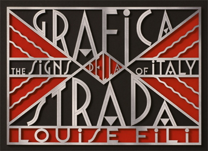
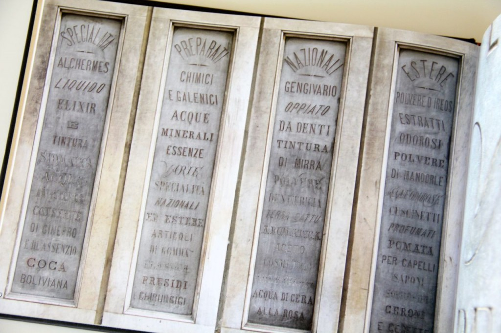
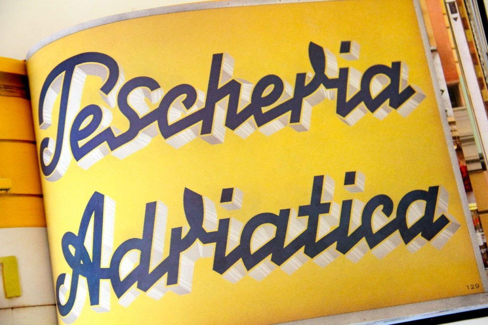

The book, Grafica della Strada: The Signs of Italy by Louise Fili is a compilation of restaurant, shop, hotel, street, and advertising signs that the author has collected over the past 30 years during her trips to Italy. The images have been divided in chapters that reflects the typographic style of the signs: classical, traditional, eclectic, futurist, fascist, and so on. These are some of my favorites:
These are the four marble panels of the Farmacia di San Marco in Florence. Although the pharmacy has been closed since the end of World War I, its façade still displays a list of elixirs and remedies that used to be sold during its golden years (how cool is this?).
In the chapter about traditional signs there's this photo that I really like and that, if you pay attention, you can still see everywhere in Italy outside the alimentari stores (family ran grocery stores):
It is a list of the most important items for sale in the store.
I like this sign because it shows a beautiful light effect, and most importantly the dedication of Mrs. Fili who waited for the sun to settle down and the illumination to turn on in order to catch this image.

I've selected this photo for the Sermoneta sign on the bottom of the page. I find its characters very elegant and unique, besides the fact that the actual town of Sermoneta is one of my favorite Medieval villages in Italy.
I couldn't stop smiling after seeing this image. I do remember, when I was a child, many bars using this kind of beaded curtains. You don't see many nowadays, and if you do, they are usually found in smaller cities and towns.
Mosaic signs are an artistic expression very common in the Italian città d'arte, some are made to lead tourists to a restaurant, as shown above.
I find the image above particularly interesting, first for its message (Duce= Mussolini), second because it hasn't been removed after Mussolini's fall. To me, it's a piece of history well preserved (you can find it in the Foro Italico in Rome).
Louise Fili, a graphic designer with a love for all things Italian, is also the author of Quattro Parole Italiane Notecards (available on Amazon), a beautiful collection of notecards with four different Italian words printed on the front:
This is such a clever idea as well as a beautiful gift to give to anyone who loves Italy.
I think that Grafica della Strada: the Signs of Italy by Louise Fili (available also in Kindle format) is a very unique approach to an aspect of Italy that often times is forgotten or simply goes unnoticed, but that nevertheless is a part of its artistic heritage.